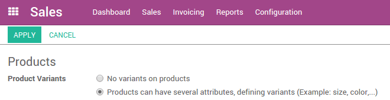
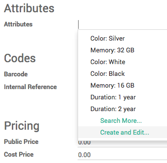

产品变量用来管理有不同变量的产品，例如尺寸，颜色等等。它可以让我们在产品模板层面对产品进行管理(所有的变量)，也可以在产品变量层面管理(特定一个变量)。
例如，一个销售ｔ血衫的公司可能有以下产品：
B&C T血衫
尺寸: S, M, L, XL, XXL
颜色：蓝色，红色，白色，黑色
在该示例中，B&C ｔ血衫**是产品模板，**B&C ｔ血衫，S，蓝色**是一个产品变量，尺寸和颜色是**属性。
以上示例总共有20个不同的产品(5中尺寸x4种颜色)。每一个产品都会有自己的库存，销售信息，等等。
变动的影响
条码：编码和条码和一个产品型号绑定，而不是一个产品模板。每个型号都可以有自己的条码／SKU。
价格：每个产品变量都会根据自己的额外属性价格(红色额外加$3)在产品模板的价格 ($20)计算出自己的价格。然而，你还可以依据产品模板或者产品变量定义价格表。
存货：存货在产品变量层面管理。你拥有的不是ｔ血衫，而是"ｔ血衫, S, 红色", 或者"ｔ血衫, M, 蓝色"。需要注意的是，在产品模板上你看到的产品数量是该产品模板下面所有变量的数量总和。(但是实际数量需要看产品变量)
图片：图片和产品型号关联，每个型号可以有自己主要的图片。
其余字段：大部分其他字段属于产品模板。如果你对他么恩进行更新，它会自动地更新到所有相关的型号上。(例如:主营业务收入科目，税)
要使用产品型号吗？
何时使用产品型号呢？
使用产品型号有以下影响：
电商：在你的在线商铺，客户只会在分类页面看到产品模板。一旦访客点击这样的产品，他将能在众多的型号中间进行选择(颜色，尺寸，……)
生产：使用型号可以基于产品模板和各种型号质检的细微差别只定义一个物料表。例如：你可以创建一个"T血衫"并添加一些特定尺寸例如S的行以及特定颜色例如红色的行，从而代替创建物料表"T血衫, 红色, S"。
价格：产品的默认价格是产品模板的价格加上型号上特定属性的额外价格。这样，型号的价格维护起来就很容易，你不必在每个型号上维护，当然也可以使用价格表规则固定每个型号的价格。
在什么时候应该避免使用产品型号？
使用变量有可能会增加操作的复杂程度，当你要使用产品的变量属性时，你要确保这样做只会减少操作的复杂程度。
例如，如果使用型号的话，在导入期初数据的时候就比较麻烦。你不能只是导入产品的列表，还必须要导入产品模板以及相关的型号。
另外，你需要谨慎的选择尺寸作为变量，这些都术语一个单独的产品模板。局一个例子，一个公司有如下产品：
质量：T血衫，马球，衬衫
颜色: 红色, 蓝色
尺寸: S, M, L, XL
在该用户案例中，你可以创建1个带有尺寸变量的模板(布局，ｔ血衫，保罗)。但是，我们还是建议你创建两种不同的产品把保罗或者衬衫分开，并且在你的电脑上网站客户也乐意看到这样分：
产品模板：T血衫
颜色: 红色, 蓝色
尺寸: S, M, L, XL
产品模板：马球
颜色: 红色, 蓝色
尺寸: S, M, L, XL
配置
激活产品型号特性
在你使用产品变量之前，你需要在设置中激活产品变量。要这样做，你需要进入销售模块，在菜单：[UNKNOWN NODE title_reference]，找到 ** 产品变形 [UNKNOWN NODE problematic] 行，然后勾选 ** 产品可以有多个变体 ** ,然后点击 ** 应用 ** 。
创建带有型号的产品
一旦你激活了变量选项，你就可以给产品添加变量。要这样做的话，进入销售模块：[UNKNOWN NODE title_reference]。还可以从采购和库存模块进入产品页面。
现在，点击你想添加型号的产品。
在产品页面，一个新的变量页面显示出来。在页面上方的紫色数字是当前该产品的变量数量。要添加新的变量，点击该按钮，在新的窗口，点击 创建 。
在 ** 属性 ** 中，点击下拉菜单并选择你要添加的变量类型。。如果变量不存在，你可以通过点击创建和编辑随手创建……
在属性窗口， ** 值 ** 字段是属性的描述例如绿色，塑料或者32G，属性 字段是变量的类型例如颜色，材料或者内存。

你可以在**属性额外价格**字段顺便给特定型号添加相关成本，或者选择稍后更改，点击**保存**。
你也可以给型号添加不同的条码以及内部参考码。
完成输入该型号的所有的特定属性后，点击**保存**。
管理产品型号
介绍
以下示例就是一个产品模板上的两个不同属性的型号产品：
B&C T血衫
颜色: 红色, 蓝色, 白色
尺寸: S, M, L, XL, XXL
管理组合可能性
默认地，基于以上的产品模板，你得到15个不同的产品(3种颜色，5种尺寸)，如果XXL号的红色和蓝色不存在，你可以设定这两个产品型号无效。
要这样做的话，点击**型号**按钮，选择XXL，白色Ｔ血衫。在产品页面上，不勾选XXL，白色Ｔ血衫这个产品**有效**框。
小技巧
使产品无效不同于设定产品的库存为0.
根据型号设置价格
对产品的有些型号你可以添加超过主要价格的成本。
一旦你激活了产品变量选项，你就可以在产品上添加产品变量。要这样做，进入销售模块，打开：[UNKNOWN NODE problematic]销售 --> 产品`并点击你想要更改的产品，点击 ** 变量价格 ** 按钮来查看变量列表。

点击你想要添加值的变量名称，确保3个字段可编辑。在**额外属性价格**字段你，添加该变量的成本，他会自动的和原始价格相加。

一旦你输入了所有的额外值，点击 保存。